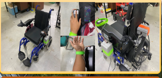

Smart IOT
1. To develop a monitoring system that can monitor the
health, condition
and location of the elderly people using a wheelchair.
2. To design a mobile application for monitoring and
notification purpose.
3. To evaluate the monitoring system which offers
accurate and reliable
results for the monitoring system of elderly people
using a wheelchair
